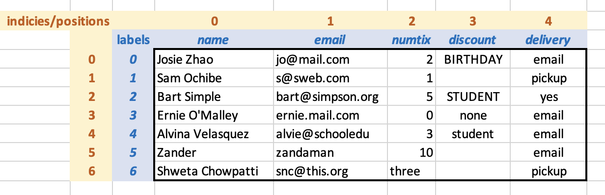
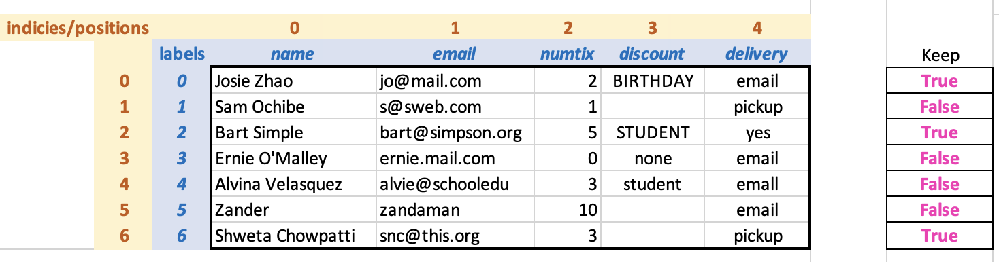

10.1 Introduction to Pandas
Now it’s time to transfer what we learned about tables in Pyret over to Python. Pandas is a popular package, and you’ll find many tutorial and help sites for it online. In general, Python usually provides many ways to approach a given task. As such, there are many ways to do common operations in Pandas. We have chosen to present a certain collection of ways that align with the concepts as we covered them in Pyret.
To work in Pandas, you’ll need to include the following line at the top of your file:
import pandas as pd10.1.1 Pandas Table Basics
10.1.1.1 Core Datatypes: DataFrame and Series
Pandas uses the term DataFrame for a table with rows and columns. DataFrames are built out of two more basic types:
An array is a sequence of values that can be accessed by position (e.g., 0, 1, ... up to one less than the length of the array). Like lists, arrays capture a linear (ordered) collection of values. Unlike lists, arrays are created with a limit on the number of elements that they contain. In practice, lists are more commonly used when elements are frequently added or removed whereas arrays are more commonly used when elements frequently get accessed by their position. Nearly every programming language offers both lists and arrays; a detailed contrast is beyond the scope of this book (this information would be covered in a data structures class).
A Series is an array in which the positions optionally have labels in addition to the position numbers.
In Pandas, a row is a Series in which an array of the cell values is labeled with the column headers (this is similar to the ‘Row‘ datatype in Pyret). A DataFrame is a series of these rows.
10.1.1.2 Creating and Loading DataFrames
DataFrames can be created manually or loaded in from a file, as we did in Pyret. Here’s a simple example of creating one by hand:
data = {
'day': ['mon','tues','wed','thurs','fri'],
'max temp': [58, 62, 55, 59, 64]
}
temps = pd.DataFrame(data)data is a dictionary that maps column names to
values. Calling pd.DataFrame creates a DataFrame from the
dictionary. (There are other ways to create DataFrames manually which
you can find by searching online.)
To load a DataFrame from a CSV file, you need either the path to the file on your computer or the url where you can get the CSV file online. Here’s an example of the url version. In this example, we have the following CSV contents and we want to change the header names when loading the file:
The following read_csv command says that the CSV file is at
url, that there are headers in the first row (numbered
0), and that we want to use the values in names as
the column labels (this will ignore whatever might be in the header
row in the CSV file).
events_url = "https://raw.githubusercontent.com/data-centric-computing/dcic-public/main/materials/datasets/events.csv"
events = pd.read_csv(events_url, header=0,
names=['name','email','numtix','discount','delivery'])If we wanted to use the headers in the CSV file as the column headers,
we would leave out the names=[...] part. If the CSV had no
header row, we would write header=None instead of
header=0. (There are many more configuration options in the
Pandas
documentation, but you won’t need them for the examples in this book.)
Conceptually, the loaded DataFrame is as follows, with the labels shown in blue and the indicies (positions) show in yellow:

Since we did not specify labels for the rows, Pandas has used numeric labels by default. At the moment, the positions and the labels are the same for each row, but we will see that this is not always the case.
(If you look at the actual loaded table, some of the blank cells in
the discount column will contain NaN, which is the standard
Python value for “missing information”. We will deal with that
information shortly.
10.1.1.3 Using Labels and Indices to Access Cells
Rows, columns, and cells can be accessed using either their (numeric) positions or their labels. Here are some examples:
events['numtix'] # extract the numtix column as a series
events['numtix'][2] # get the value in the numtix column, row 2
events.loc[6] # extract row with label 6 from the DataFrame
events.loc[6]['numtix'] # get the value in row with label 6, numtix column
events.iloc[6] # extract the row with index/position 6Notice that we used different notation for accessing a cell
depending on whether we accessed the row first or the column
first. This is because we are showing you how to access data through
either position indices or labels. Using .loc tells Pandas
that you are using a label to access a row. If you want to use the
position instead, you need to use iloc (the i stands
for “integer”). If you are using a programmer-supplied label instead,
you can just use the label directly.
In a DataFrame, both rows and columns always have position indices and may
have labels. The .loc notation works on either rows or
columns, we just happened to illustrate the notation on the rows since
we had already created labels on the columns when we loaded events.
10.1.2 Filtering Rows
Back in Pyret, we filtered rows from a table by writing a function
from Row to Boolean. The filter-with function
applied that function to every row in the table, returning a new table
with those rows for which the predicate were true.
In Pandas, we select rows by providing an array of Booleans that has
the same length as the number of rows in the DataFrame. Filtering keeps
those rows for which the corresponding array entry is True.
For example, here’s our DataFrame diagram from before, this time with an
array to the right indicating that we want to keep rows 0, 2, and
6.

The “keep” array is not part of the DataFrame. Here is the corresponding array expressed in code, followed by the notation to use the array to filter the DataFrame:
# which rows we want
keep = [True, False, True, False, False, False, True]Once we have the array of booleans, we use it to extract a collection
of rows using similar notation that we previously used to extract a
column. Just as we wrote events['numtix'] to select the
'numtix' column, we can write events[keep] to
select a collection of rows. The DataFrame that results from filtering
(along with the True cells of the keep array for
illustration) appears as follows:

How does Pandas know whether we want to select rows or columns? It
depends on what we provide in the square brackets: if we provide a
single label, we get the column or row with that label; if we provide
an array of booleans, we get the rows for which the corresponding row
(by position) is True.
Do Now!
Look at the returned DataFrame. Do you notice anything interesting?
Look at the row labels and indices: the labels have been retained from
the original DataFrame (0, 2, and 6), while the indices are a sequence
of consecutive numbers starting from 0. Having both ways to reference
rows—
Do Now!
Does filtering rows this way in Python keep the original
eventsDataFrame intact? Try it out!
Arrays of booleans that are used for filtering out other arrays are called masks. Here, we have shown a simple mask that we constructed by hand. If we had a long DataFrame, however, we would not want to construct a mask for it by hand. Fortunately, we don’t have to. Python provides notations that let us construct masks via expressions over a series.
Imagine that we wanted to filter the events table down to
those rows with delivery method 'email'. To create a mask for
this, we first select the delivery column as a series:
events['delivery']Next, we use the series in a boolean expression that states the constraint that we want on each element of the series:
events['delivery'] == 'email'Wait, what’s going on here? events['deliver'] is a Series (a
labeled array of strings). 'email' is a string. What does it
even mean to ask whether two values of different types be considered
equal, especially when one has many component values and the other
does not?
In this case, the == doesn’t mean “are these equal”?
Instead, Python applies == 'email' to every element of the
events['delivery'] Series, constructing a new Series of the
results. This idea of applying an operation to all elements of an
array is known as “lifting”. It is one of the shortcuts that Python
provides to help experienced programmers do simple common
tasks quickly and easily.
Now that we have a Series of booleans (for which events will be picked
up by email), we can use it to select those rows from the
events DataFrame:
events[events['delivery'] == 'email']The inner use of events is for creating the mask, while the
outer one is for filtering the table with that mask.
As a warning: if you search online for information on how to filter or process DataFrame, you might find code samples that do this using for loops. While that approach works, it isn’t considered good Pandas (or general programming) practice. Most modern languages provide built-in constructs for iterating over lists and other sequence-style data. These operations have more descriptive names than generic loops (which makes them easier for other programmers to read), and are often engineered to run more efficiently under the hood. As a general rule, only default to basic loops if there is no built-in operator to do the computation that you have in mind.
10.1.3 Cleaning and Normalizing Data
The same operator-lifting idea that we just saw when creating masks
from DataFrames also comes into play for normalizing data. Recall that
when we worked with the events table in Pyret, we converted
all of the discount codes to lowercase. Here’s the code that does this
in Pandas:
events['discount'] = events['discount'].str.lower()Do Now!
Look at the above code. Break it down and try to articulate what each part does. Do any parts seem new or different from things we’ve done so far in Pandas?
On the right side of the =, we are extracting the Series of
discount codes (events['discount']), then using the lowercase
operation on strings str.lower() to convert each one,
building up a Series of the results. Normally, given a string (such as
'BIRTHDAY'), we could get a lowercase version of it by
writing just 'BIRTHDAY'.lower(). What’s the extra str
doing in there?
This is a nuance about lifting. Python can evaluate
'BIRTHDAY'.lower() because lower() is defined
directly on strings. lower() is not, however, directly
defined on Series. To bridge the gap between having Series data and
wanting to use a string operation on it, we insert str before
lower(). Effectively, this tells Python where to find the
lower() operation (in the collection of operations defined on
strings).
The left side of the above code looks like:
events['discount'] = ...This tells Pandas to replace the current contents of the
'discount' series with the series on the right side of the
=. It is similar to transform-column from Pyret, but with a
fundamental difference: in Pyret, transform-column left the old
table intact and produced a new table with the new column
values. Instead, in Pandas the old column gets replaced, thus
destroying the original table. There are many nuances to having
operations destroy and replace data; the chapter on
Mutating Structures studies them in detail.
10.1.3.1 Clearing out unknown values
Now let’s try a different cleaning and normalization problem: we want
the discount column to contain only known discount codes or empty
strings. The none entry in line 3 of the table should be
converted to an empty string, and we should make sure that all of the
NaN and
seemingly empty entries in the discount cells are also converted to empty
strings (as opposed to strings of multiple spaces).
Do Now!
Plan out how you might do this task using mask expressions. Even if you don’t know all the specific notation for the operations you need, you can still work out a plan for completing this task.
If you planned out the tasks, you might have a todo list like the following:
create a mask of rows with known discount codes
invert that mask (swap the false and true values)
filter the DataFrame to rows without a known discount code
replace all the discount column values in that DataFrame with an empty string
We have seen how to do parts of steps 1 and 3, but neither of steps 2 and 4. Let’s work through the steps one by one:
Here’s the code for step 1, which creates a mask for the rows with known discount codes:
codes = ['birthday', 'student'] # a list of valid codes
events['discount'].isin(codes) # which rows have valid codesHere, we use a lifted isin operator on lists to compute the mask.
For step 2, we have to swap the true and false values. We can do this
by using the negation operator ~ on the mask from step 1:
~events['discount'].isin(codes)For step 3, we want to filter events with this mask. Just to
keep the code easier to read, we’ll give the mask a name and then
perform the filter:
mask = ~events['discount'].isin(codes) # rows with INVALID codes
events[mask]Finally, we use = to set the discount column of the filtered
DataFrame to the empty string:
events[mask]['discount'] = ''Whoops – this seems to have generated an error message that says something about a “SettingWithCopyWarning”. This is a subtlety that has to do with what happens when data gets updated under the hood (we’ll learn about subtleties of mutation in Mutable Lists). For now, we’ll use this alternate form that avoids the error:
events.loc[mask,'discount'] = ''Putting it all together, the entire program looks like:
codes = ['birthday', 'student']
mask = ~events['discount'].isin(codes)
events.loc[mask]['discount'] = ''Summarizing, the code pattern for updating values for a column in some rows of a DataFrame is as follows:
make a boolean series mask for which rows to update
use the mask to select just the rows where the mask is true
use
.locwith the mask and column name to select the series of cells to updateuse
=to give those cells their new value
Exercise
Follow the above pattern to transform all delivery values of
'yes'to'pickup'.
10.1.3.2 Repairing Values and Column Types
The source file for the events table contained an error in
which someone entered the string 'three' in place of the
number 3 for the number of tickets in the last row. We can
repair errors like this manually:
events.loc[6]['numtix'] = 3Do Now!
Make this repair and ask your Python environment to show you the corrected table.
Now that the 'numtix' column contains only numbers, we can
total the number of tickets that were sold:
events['numtix'].sum()Do Now!
What did you get? Why?
Because Python environments print strings without quotation marks, the
numtix column appears to contain numbers. The failure of sum
shows that this is indeed not the case. We can inspect the types that
Python has determined for the numtix values using the type
operation:
type(events['numtix'].loc[0]) # prints str
type(events['numtix'].loc[6]) # prints int for the corrected valueWhat happened here? During the original call to read_csv,
Python detected both numeric and string data in the numtix column. It
therefore read in all the values as strings. Our manual repair that
replaced the string 'three' with the number 3 fixed
the value and type for one row, but the remaining values in that
column have still been read in as integers.
Fortunately, Python provides an operation to change the type of data
within a series. The following code converts the values in the
events['numtix'] series to integers, updating the series
within the DataFrame in the process.
events['numtix'] = events['numtix'].astype('int')
events['numtix'].sum() # now this works10.1.4 Computing New Columns
Let’s extend the events table with the total cost of tickets, while also accounting for a discount. We’ll start by building a column for the ticket price without any discounts. This is a straightforward application of lifting as we’ve seen it so far:
ticket_price = 10
events['total'] = events['numtix'] * ticket_priceDo Now!
Use masks, operator lifting, filtering, and series updating to give a 10% discount to everyone with the “birthday” discount code.
We do this by creating a mask for the “birthday” discount, then updating just that part of the DataFrame.
bday_mask = events['discount'] == 'birthday'
events.loc[bday_mask,'total'] = events['total'] * 0.90Notice that the notation for computing new columns and updating
existing ones is the same (unlike in Pyret, where we had different
operations build-column and transform-column). In
Pandas, a new column is created if the given column name doesn’t
already exist in the DataFrame; otherwise, the existing column with
the given name gets updated.
10.1.5 Aggregating and Grouping Columns
Pandas has built-in operations for doing standard mathematical computations over series. For example, to total the number of tickets sold or to compute the average number of tickets per order, we can write
events['numtix'].sum() # compute total number of tickets sold
events['numtix'].mean() # compute average number of tickets per saleThese are the same built-in operations that apply to Python lists.
Imagine now that we wanted a finer-grained look at total ticket sales. Rather than just the total sold overall, we’d like the total sold per discount category.
Do Now!
How might you compute this?
We could imagine constructing a list of the discount codes, filtering
the ticket sales table to each code, then using sum on each
filtered table. This feels like a lot of work, however. Producing
summaries of one column (e.g., ``numtix'') around the values
in another (e.g., ``discount'') is a common technique in data
analysis. Spreadsheets typically provide a feature called a “pivot
table” that supports such a view of data.
In Pandas, we can do a computation like this using an operation called
groupby. Here’s are two examples. The first reports how many
sales (rows) were made with each discount code, while the second summarize the total
number of tickets sold by discount code:
events.groupby('discount').count()
events.groupby('discount')['numtix'].sum()groupby takes the name of the column whose values will be
used to cluster rows. It returns a special type of data (called
GroupBy). From there, we can select a column and perform an
operation on it. The column selection and operation are performed on
each collection of rows in the GroupBy. The results of the
second expression in the above code are reported in a new DataFrame:

In this DataFrame, discount labels a column. The first row has the empty string in the discount column, with 14 tickets purchased without discount codes. There were 2 tickets purchased with a birthday discount and 8 with a student discount.
The Pandas documentation provides a large collection of operations
that can used on GroupBy data; these cover computations such
as counting, mean, finding largest and smallest values, and performing
various other statistical operations.
10.1.6 Wide Versus Tall Data
Let’s try grouping data on a different dataset. Here’s a table showing sales data across several regions during each month of the year:

Copy the following code to load this table for yourself.
import pandas as pd
sales_url = "https://raw.githubusercontent.com/data-centric-computing/dcic-public/main/materials/datasets/sales-wide.csv"
col_names = ['month','division','northwest','northeast','central','southeast','southwest']
sales = pd.read_csv(sales_url, header=0, names=col_names)Do Now!
Here are several questions that we might want to ask from this dataset. For each one, develop a plan that indicates which Pandas operations you would use to answer it. If a question seems hard to answer with the operations you have, explain what’s difficult about answering that question.
In which month did the northwest region have the lowest sales?
What were the total sales per month across all regions?
Which region had the highest sales in April?
Which region had the highest sales for the entire year?
For question 1, we can sort the table by northwest sales in decreasing order, then see which month is listed in the first row.
s = sales.sort_values('northwest',ascending=True)
s.iloc[0]['month']Do Now!
What value would we have gotten had we used
locinstead ofilocin the above code?
Do Now!
Did sorting the
salestable change the row order permanently? Check by having Python show you the value ofsalesafter you runsort_values.
For question 2, we could build a new column that stores the sales data across each row:
# we use parens around the right side to break the expression across
# multiple lines, rather than extend past the window edge
sales['total'] = (sales['northwest'] + sales['northeast'] +
sales['central'] + sales['southeast'] +
sales['southwest'])Do Now!
Did computing the
totalcolumn change the row order permanently? Check by having Python show you the value ofsalesafter you run the code.
(If you want to remove the new total column, you can do this with
sales = sales.drop(columns='total').)
Question 3 is more challenging because we want to sort on the regions,
which are in columns rather than rows. Question 4 is even more
challenging because we want to produce sums of columns, then compare
regions. Both of these feel a bit like problems we might know how to
solve if the rows corresponded to regions rather than months, but that
isn’t how our data are organized. And even if we did flip the table
around (we could, the technical term for this is transpose),
problem 4 would still feel a bit complicated by the time we computed
annual sales per region and sorted them.
What if instead our table had looked like the following? Would questions 3 and 4 get any easier?

With the data organized this way, question 3 can be answered with a
combination of row selection and sort_values. Question 4
becomes easy to answer with a groupby. Even the code for
Question 2 gets cleaner.
The contrast between these two tables highlights that how our data are organized can determine how easy or hard it is to process them with the standard operations provided by table-processing packages such as Pandas (what we’re discussing here applies to other languages that support tables, such as Pyret and R).
In general, the operations in table-processing packages were designed to assume that there is one core observation per row (about which we might have many smaller details or attributes), and that we will want to aggregate and display data across rows, not across columns. Our original treated each month as an observation, with the regions being details. For questions 1 and 2, which focused on months, the built-in operations sufficed to process the table. But for questions 3 and 4, which focused on regions or combinations of regions and months, it helps to have each month and region data be in its own row.
Tables like the original sales data are called wide
tables, whereas the second form are termed tall tables. At
the extremes, wide tables have every variable in its own column
whereas tall tables have only one column for a single value of
interest, with a separate row for each variable that contributed to
that value. Wide tables tend to be easier for people to read; as we
have seen with our sales data, tall tables can be easier to process in
code, depending on how our questions align with our variables.
Converting Between Wide and Tall Data
Table-processing packages generally provide built-in operators for
converting between wide and tall data formats. The following Pandas
expression converts the (original) wide-format sales table into a
tall-format table, retaining the month of the year and the product
division as a label on every datapoint:
sales.melt(id_vars=['month','division'])This basic melt expression uses default column names of
variable and value for the new columns. We can
customize those names as part of the melt call if we wish:
sales_tall = sales.melt(id_vars=['month','division'],var_name='region',value_name='sales')Let’s put the wide and tall tables side by side to visualize what
melt is doing.

The columns named in id_vars remain in the original
table. For each column not named in id_vars, a row is
created with the id_vars columns, the melted-column name, and
the melted-column value for the id_vars. The above figure
color codes how cells from the wide table are arranged in the melted
tall table.
With the tall table in hand, we can proceed to answer questions 3 and 4, as well as to redo our solution to question 2:
# Question 2: total sales per month across regions
sales_tall.groupby('region').sum()
# Question 3: which region had the highest sales in April
apr_by_region = sales_tall[sales_tall['month'] == 'Apr']
apr_by_region.sort_values('sales', ascending=False).iloc[0]['region']
# Question 4: which region had the highest sales for the year
tot_sales_region = sales_tall.groupby('region').sum()
tot_sales_region.sort_values('sales',ascending=False).reset_index().iloc[0]['region']The solution to question 4 uses a new Pandas operator called
reset_index, which is needed if you want to manipulate the
output of a group-by as a regular DataFrame.
10.1.7 Plotting Data
Let’s continue with the sales data as we explore plotting in Pandas.
Let’s say we now want to take a seasonal view, rather than a monthly view, and look at sales within seasons.
Let’s say we wanted to see how summer sales varied over the
years. This is a good situation in which to use a line plot. To create
this, we first need to load matplotlib, the Python graphic
library:
import matplotlib.pyplot as plt
from Pandas.plotting import register_matplotlib_converters
register_matplotlib_converters()Next, to generate the line plots, we call the plt.plot
function on the series of numbers that we want to form the points on
the plot. We can also specify the values on the axes, as shown the
following examples.
# create a new canvas in which to make the plot
plt.figure()
# plot month column (x-axis) vs northeast sales (y-axis)
plt.plot(sales['month'],sales['northeast'])
# add central sales to the same plot
plt.plot(sales['central'])
# add labels to the y-axis and the chart overall
plt.ylabel('Monthly Sales')
plt.title('Comparing Regional Sales')
# show the plot
plt.show()Pandas will put both line plots in the same display window. In
general, each time you call plt.figure(), you create a new
window in which subsequent plot commands will appear (at least until
you ask for a plot that does not nicely overlay with the previous plot
type).
The matplotlib package offers many kinds of charts and
customizations to graph layouts. A more comprehensive look is beyond
the scope of this book; see the matplotlib website for
tutorials and many examples of more sophisticated plots.
10.1.8 Takeaways
This chapter has been designed to give you an overview of Pandas while pointing out key concepts in programming for data science. It is by no means a comprehensive Pandas tutorial or reference guide: for those, see the Pandas website.
Conceptually, we hope you will take away three high-level ideas from this chapter:
There are two notions for how to access specific cells in tables and DataFrames: by numeric position (e.g., first row, second column) or by labeled index (e.g., numtix). Both have their roles in professional-grade data analysis programming. Filter-like operations that extract rows from tables maintain labeled indices, but renumber the positional ones (so that every DataFrame has a sequence of consecutively-numbered rows).
Professional-grade programming languages sometimes “lift” operations from single values to collections of values (e.g., using
+to add elements within similarly-sized series). Lifting can be a powerful and timesaving tool for programmers, but they can also lead to type confusions for both novices and experienced programmers. You should be aware that this feature exists as you learn new languages and packages.Different table organizations (for the same data) are better in different situations. Wide and tall tables are two general shapes, each with their own affordances. You should be aware that table-processing packages provide a variety of tools to help you automatically reformat tables. If the computation you are trying to do feels too complicated, stop and consider whether the problem would be easier with a different organization of the same data.